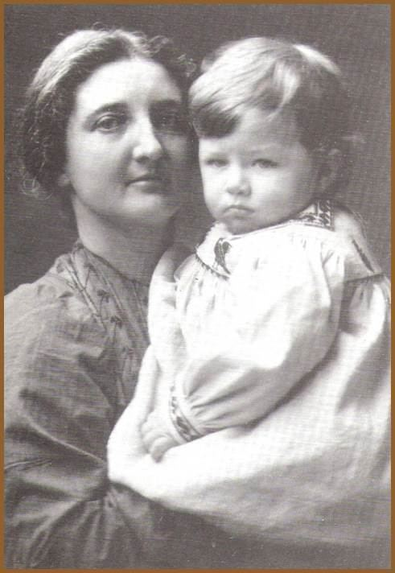

Добро пожаловать в Википедию,
Сейчас в Википедии 1 979 344 статьи на русском языке.
- Порталы
- Справка
- Создать статью
Избранная статья
Хильда Питри
Хильда Мэри Изабель Питри, урождённая Урлин (англ. Hilda Mary Isabel Petrie, nee Urlin; 8 июня 1871, Дублин — 23 ноября 1956, Лондон) — английский археолог и иллюстратор, супруга основателя систематической египтологии Флиндерса Питри, мать математика Джона Питри[англ.]. Младшая дочь английского юриста, прослужившего четверть века в Ирландии. Не получила школьного образования, посещала занятия в Королевском женском колледже[англ.], проявив способности к рисованию и естественным наукам. Благодаря художнику Генри Холидею, для которого позировала, познакомилась и вышла замуж за Флиндерса Питри, с тех пор неизменно сопровождая его во всех экспедициях; с 1904 года иногда руководила раскопками самостоятельно. В 1905—1923 годах работала секретарём Британской археологической школы в Египте, главой которой являлся её муж, осуществляя привлечение средств потенциальных спонсоров. В 1933 году после отставки супруга переселилась вместе с ним в Иерусалим, где Флиндерс Питри скончался и был похоронен. В 1947 году вернулась к дочери в Лондон, до 1953 года осуществляя издание неопубликованных археологических отчётов Флиндерса Питри. После некоторого периода забвения вклад леди Питри (как она титуловалась с 1923 года) неизменно подчёркивается историками британской археологии.
- Читать
- Все 1895 избранных статей
Хорошая статья
Николай Андреевич Рибковский
Николай Рибковский (настоящая фамилия — Кузнецо́в; май 1903 года, деревня Рибково, Великолукский уезд, Псковская губерния, Российская империя — после 1950) — советский партийный и профсоюзный деятель. Первый секретарь Выборгского райкома ВКП(б) Карело-Финской ССР (1940—1941), первый секретарь Выборгского райкома ВКП(б) Ленинградской области (1944—1948), секретарь Ленинградского обкома профсоюза рабочих промышленности вооружённых сил СССР (1948—1950-е). В 1940-е годы Н. А. Рибковской вёл дневник, отрывки из которого впервые были опубликованы в 1975 году. Наибольшую известность получила дневниковая запись от 5 марта 1942 года, в которой описано его пребывание в санатории Ленинградского обкома и горкома ВКП(б) «Мельничный Ручей». Дневник Рибковского стал самым цитируемым свидетельством привилегий партийной номенклатуры в блокадном Ленинграде.
- Читать
- Все 1895 избранных статей

Последний избранный список
Список Национальных героев Азербайджана

Предыдущий избранный список
Список наград и номинаций фильма «Оппенгеймер»
- Другие избранные списки
- Все 1895 избранных статей
Из новых материалов
Знаете ли вы?

- Дядя Булгакова (на илл.) так и не узнал, что является прототипом профессора Преображенского.
- «Сверхректор сверхпятигорского сверхуниверситета» написал статью о том, как управлять миром.
- Последний роман Джейн Остин пришлось дописывать сценаристам сериала.
- «Самый весёлый концепт-кар на выставке» сравнивали с «Фургончиком Тайн» из «Скуби-Ду».
- «Приморские Альпы» находятся на небольшом японском острове.
- Армия Паулюса погибла из-за ошибки Гитлера.

- По преданию, древние египтяне тоже захватили город (на илл.), проникнув туда хитростью.
- Для продвижения компьютерной игры разработчики создали устройство, имитирующее запах метеоризма.
- Ельники и березняки Северной Германии — дело рук человеческих.
- Европейцы уже несколько столетий вкушают суп из майских жуков.
- Бывший тренер сборной Танзании умер во время матча занзибарского клуба.
- Одна из крупнейших музыкальных загадок интернета оказалась саундтреком к порнофильму.
- Другие избранные списки
- Все 1895 избранных статей
Текущие события
Актуальные темывойна в Газевторжение России на Украину (май)Каннский кинофестивальпротесты в Грузиипротесты в университетах США и других странчемпионат мира по хоккею с шайбой | Недавно умершие

- Андрей Белоусов (на илл.) сменил Сергея Шойгу на посту министра обороны России.
- В Казахстане бывший министр экономики Куандык Бишимбаев приговорён к 24 годам лишения свободы за женоубийство.
- На конкурсе «Евровидение» с песней «The Code» одержал победу швейцарский исполнитель Nemo.
- На Солнце произошли мощные вспышки, которые вызвали сильнейшую геомагнитную бурю текущего солнечного цикла.
- Кайрен Уилсон стал чемпионом мира по снукеру, обыграв в финале Джека Джонса со счётом 18—14.
- Произошли наводнения с большим числом жертв в Кении и Танзании (438), и Бразилии (146).
- Другие избранные списки
- Все 1895 избранных статей
В этот день
15 мая
Международный день семей

- 1252 — Иннокентий IV разрешил пытать подозреваемых в ереси.
- 1602 — Бартоломью Госнольд первым из европейцев посетил Кейп-Код.
- 1768 — Генуэзская республика заложила Франции остров Корсика.
- 1836 — астроном Ф. Бейли открыл «чётки Бейли» (на илл.).
- 1904 — минзаг «Амур» потопил японские броненосцы «Хацусэ» и «Ясима».
- 1928 — в мультфильме «Безумный самолёт» состоялся кинодебют Микки Мауса.
- 1935 — открылась первая линия Московского метрополитена.
- 1943 — по указанию Сталина распущен Третий интернационал.